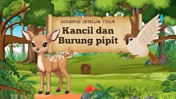

Sikancil

(ingat ! ini cuma diambil gambarnya saja, ceritanya dari penulis)
Si Kancil adalah seekor kancil yang cerdas dan pandai. Suatu hari, ia sedang bermain di hutan dan
melihat sebuah pohon yang sangat tinggi. Ia ingin memetik buahnya, tetapi tidak bisa mencapainya. Ia pun
memikirkan cara untuk memetik buah itu. Ia meminta bantuan dari seekor burung yang sedang terbang di
atas pohon. Burung itu membantunya dengan cara memberi tahu kancil bagaimana caranya memanjat pohon
tersebut. Setelah berhasil memetik buah, kancil pun pulang dengan senang hati.
Suatu hari, burung itu terjebak di sebuah jaring yang dipasang oleh pemburu. Kancil yang melihat
kejadian itu segera
datang untuk membantu burung tersebut. Ia menggunakan kecerdasannya untuk memotong jaring itu dengan
serpihan kaca tajam
yang ia temukan di hutan. Burung itu pun bebas dan berterima kasih kepada kancil atas bantuannya.
Sejak saat itu, kancil dan burung menjadi teman baik. Mereka sering bermain bersama di hutan dan saling
membantu satu sama lain. Kancil selalu mengajarkan burung tentang kecerdasan dan keberanian, sementara
burung mengajarkan kancil tentang kebijaksanaan dan kesabaran.
Kisah persahabatan antara kancil dan burung ini menjadi inspirasi bagi semua hewan di hutan. Mereka
belajar bahwa dengan saling membantu dan bekerja sama, mereka bisa mengatasi segala rintangan dan
mencapai tujuan mereka bersama-sama.
by : Tasha(& VSCode AI)